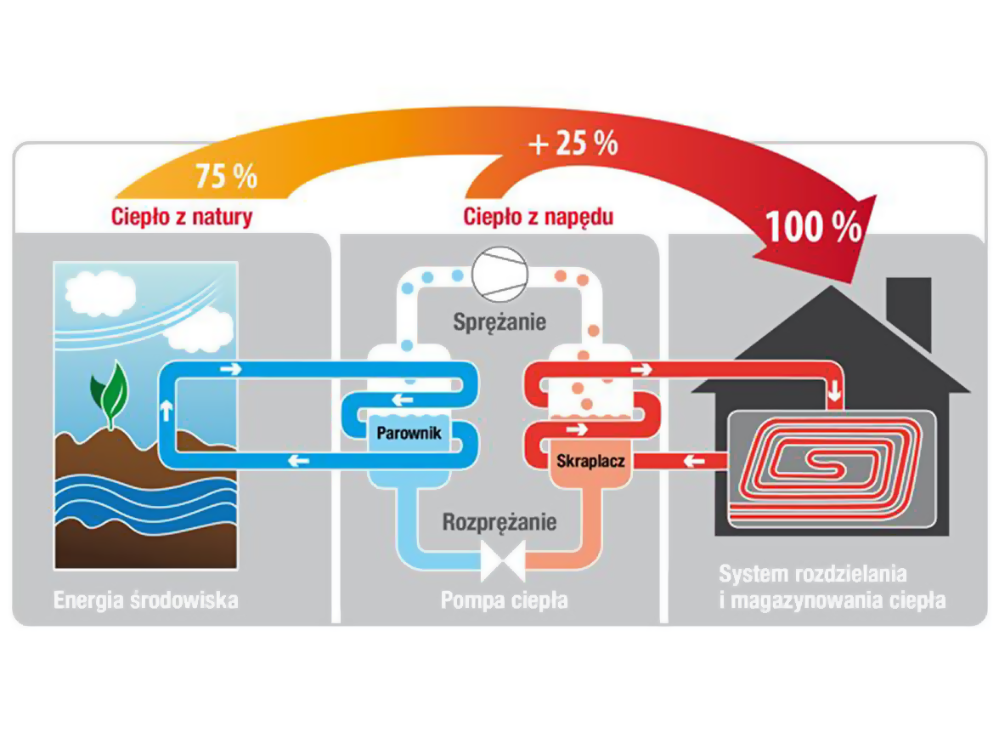

Najczęściej stosowanym rozwiązaniem i najbardziej efektywnym jest pozyskiwanie energii
cieplnej z pionowych odwiertów o głębokości od 30 do 100 metrów
przez zabudowane w nich wymienniki ciepła.
Są to U-kształtne, zgrzane u podstawy kolektory wykonane z węży polietylenowych,
w których w układzie zamkniętym krąży najczęściej 30% roztwór solanki.
Ilość i głębokość, (czyli sumaryczna ilość metrów) otworów wiertniczych uwarunkowana
jest kubaturą obiektu przeznaczonego do ogrzania oraz
zdolnością przekazywania ciepła przez grunt.
Średnio przyjmuje się, iż z 1 metra bieżącego odwiertu możemy uzyskać 50 Wat mocy
cieplnej.
By uniknąć wzajemnego oddziaływania otworów konieczne jest zachowanie odpowiedniej
odległości pomiędzy nimi.
Wynosi ona od 6 do 15 metrów i zależy od głębokości otworów.
Zaletą kolektora pionowego jest to, że zajmuje niewiele miejsca, charakteryzuję się
bardzo dobrą stabilnością temperaturową (ok. 10ºC) w porównaniu do kolektora poziomego
(ułożonych w gruncie na głębokości poniżej warstwy przemarzania rur).
Wydajność cieplna kolektora poziomego w okresie zimowym znacznie spada co nie ma
miejsca w kolektorach pionowych.